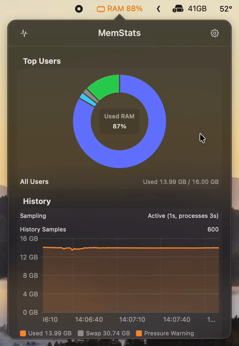

A memory monitor for macOS that lives in the menu bar. Built for Macs shared by more than one user, and useful on every other Mac too.
Version 1.0.0. Requires macOS 14 Sonoma or later. Apple Silicon and Intel.

* Debug build under Xcode, read in Activity Monitor on 2026-10-03. A Release build is expected to be lighter. Details are in the README.
Most system monitors try to show everything. MemStats answers one question well: where did my memory go?
A donut chart splits RAM by user account, so you can see at a glance who is using the memory on a shared Mac. Click a slice to filter every list below.
Chrome, VS Code and Slack spawn dozens of helper processes. MemStats rolls them up under the parent app, so Top Apps shows what you actually launched.
The menu bar title turns green, orange or red from the same signal Activity Monitor uses. Swap sits next to it.
See the last two minutes at a glance and scroll back through about ten. It is bounded on purpose, so the app stays light and nothing is written to disk.
If a user's memory climbs on every sample, or jumps suddenly, MemStats says so in plain words. A cheap way to spot a leak early.
SwiftUI and AppKit, system colors, light and dark mode, VoiceOver labels. It samples less often while the popover is closed, and it never phones home.
Click the menu bar item. Everything fits in a single 380 by 540 point window.
Donut of used RAM by user, with free memory and an "Unattributed Used" slice so the numbers add up to the system total.
Used RAM colored by pressure at each sample, plus a dashed line for the user you selected, swap and growth hints.
Apps ranked by memory with their process count. Hover for the bundle path.
User, PID, process name and memory, for everyone or only the selected user. One click opens Activity Monitor.
MemStats does not replace a full system monitor. It does one job, and does it in more depth than the all-in-one apps.
| Feature | MemStats | Stats | iStat Menus | Menu Stats |
|---|---|---|---|---|
| Price | Free | Free | Paid, 14-day trial | Free |
| Source code | On GitHub | Open source | Closed | Closed |
| Focus | Memory only | CPU, GPU, RAM, disk, network, sensors | Everything, plus weather | CPU, GPU, RAM, disk, network |
| Memory split by user | Yes | No | No | No |
| Helpers grouped into apps | Yes | Process list | Yes | Not stated |
| Leak and jump hints | Yes | No | Rules and alerts | No |
| CPU, disk, network, sensors, fans | No | Yes | Yes | Most |
| Mac App Store | No | No | No | Yes |
Based on each app's public page as of October 2026. Check the vendors for current details.
You share a Mac with other accounts, run a lab or build machine, or you only care about RAM and want a monitor that stays out of the way.
You need CPU, temperature, fan control, network graphs or weather. Stats and iStat Menus cover that well, and you can run MemStats next to them.
MemStats is distributed outside the Mac App Store, because it needs the App Sandbox off to run top and read processes of other users.
Get MemStats-1.0.0.zip from GitHub Releases.
Unzip and drag MemStats.app into /Applications.
The build is ad hoc signed and not notarized yet. Use Open Anyway in System Settings, or run:
xattr -dr com.apple.quarantine /Applications/MemStats.app
The app is not notarized yet, so Gatekeeper asks for confirmation. Go to System Settings, Privacy and Security, and click Open Anyway. After that it opens normally.
MemStats uses the same formula for Memory Used and the same pressure signal, but process memory comes from top, which reports in a different unit and accounts shared memory differently. Values are indicative. The gaps are documented in the repository.
No. Sampling is local, and history is kept in memory only. "Check for Updates" and "Report a Bug" just open your browser.
Memory sampling is cheap. Each process update runs top, about 1.4 seconds of work, so the process interval is the setting that matters. While the popover is closed, RAM updates at most every 15 seconds and processes every 60.
English, German, Spanish, French, Japanese, Korean, Simplified Chinese and Vietnamese.
There is no automatic update. Open Settings, click Check for Updates, then download the latest release and replace the app.
Free, small and quiet. If MemStats saves you time, a star on GitHub helps keep it going.